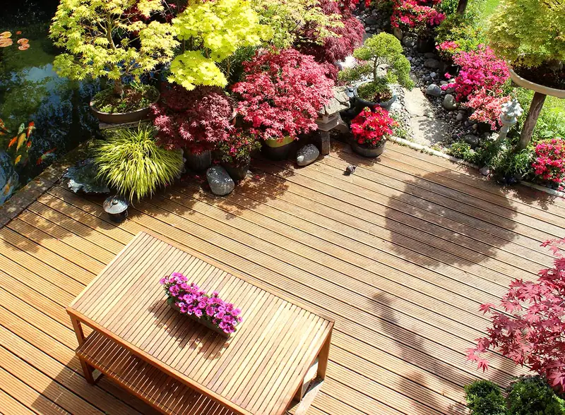
01
Gartenbau
Neuplanung oder Umgestaltung nach persönlichem Vor-Ort-Termin – als Erholungsoase, Zier- oder Nutzgarten.
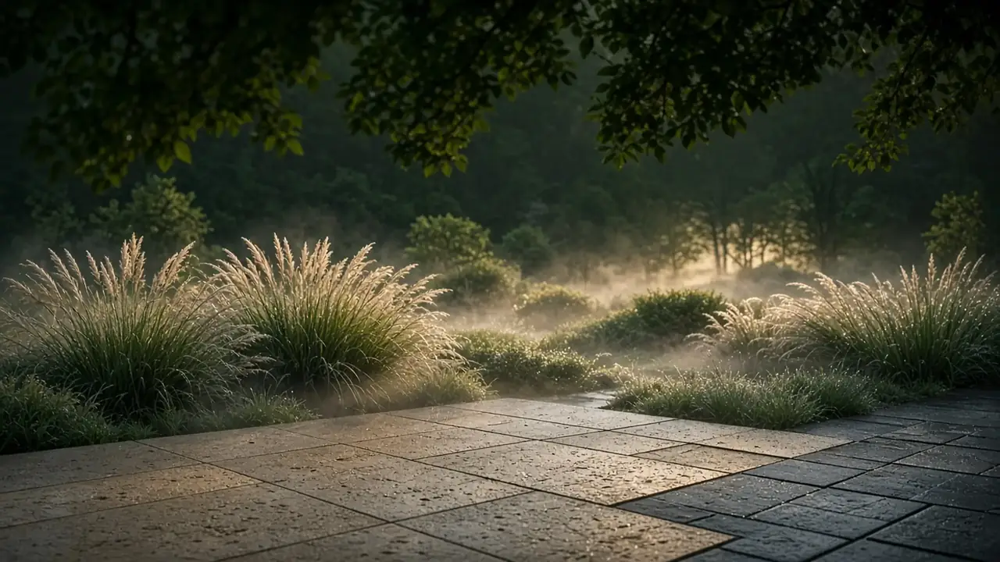
Garten- & LandschaftsbauLangenfeld
Garten- und Landschaftsbau in Langenfeld für Privatkunden, Gewerbe und öffentliche Auftraggeber – geplant, gebaut und gepflegt aus einer Hand.
Leistungen
Vom ersten Spatenstich bis zur regelmäßigen Pflege: Wir planen, bauen und pflegen – und organisieren Gerät oder Know-how von Dritten, wenn es nötig ist. Wählen Sie einen Bereich für alle Details.

Neuplanung oder Umgestaltung nach persönlichem Vor-Ort-Termin – als Erholungsoase, Zier- oder Nutzgarten.
Pflaster, Naturstein oder Kies – inklusive Untergrund, Treppen und sauberer Randgestaltung.
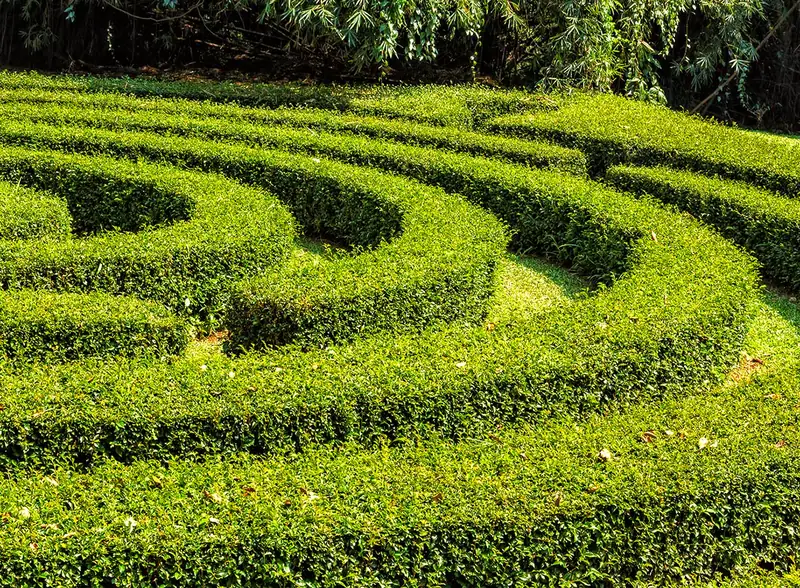
Vorgärten, Zier- und Nutzgärten bis zu großen, naturbelassenen Flächen – regelmäßig oder nach Bedarf.
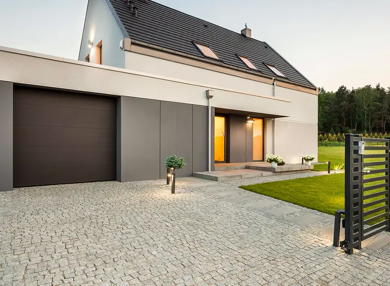
Mauern, Abgrenzungen, Wege und Plätze – Planung, Bau und fachgerechte Verlegung.
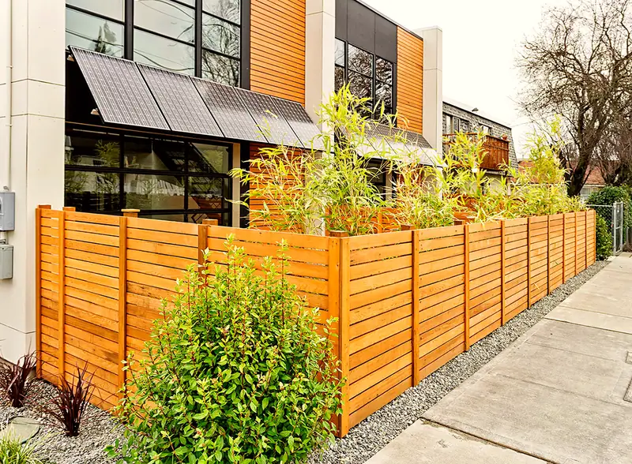
Beratung zu Holz, Metall, Naturstein und Beton, zu Toren, Stabilität und Kosten – geplant und gebaut.
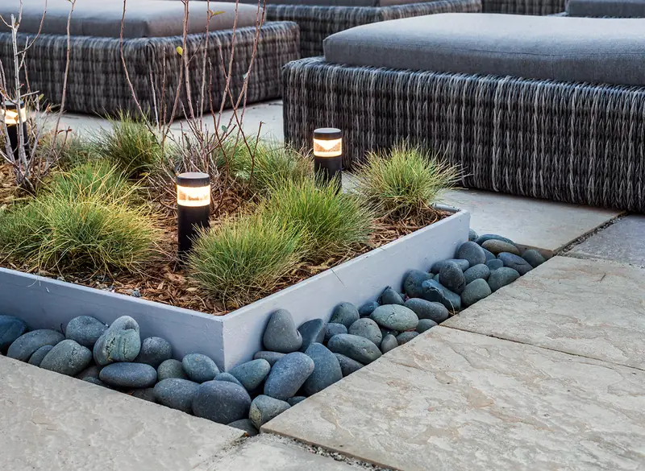
Wege-, Terrassen- und Sicherheitsbeleuchtung, Lichteffekte und Bewässerung – auf Wunsch per Smart Home.
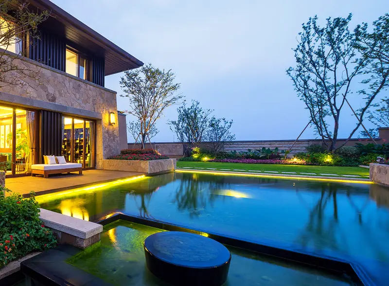
Über den TeichMeister-Verbund: Uferzonen, Steinwände, Wasserfälle und Ausstattung nach Wunsch.
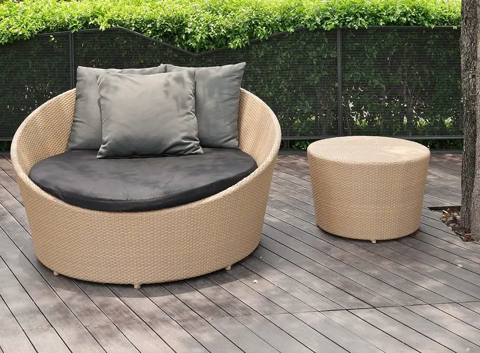
Terrassenbau, Sitzecken, Wurzel- und Baumstumpf-Beseitigung, Gartentechnik, Isolier- und Dämmarbeiten.
Signature · Wasser im Garten
Bei warmem, sonnigem Wetter gibt es kaum Erfrischenderes als die Zeit an einem See. Ganz nach Ihren Wünschen und den Möglichkeiten Ihres Grundstücks gestaltet Sivari Gartenbau Schwimmteiche, Naturpools und Wellnessanlagen – Ihr „See-Feeling für Zuhause“.
Sie profitieren von der Kompetenz des Verbunds, wenn Sie Ihren Schwimmteich oder Naturpool bei Sivari Gartenbau in Auftrag geben: Forschung und Entwicklung, Zusammenarbeit mit Universitäten, permanente Schulungen und Erfahrungsaustausch.
Zahlen beziehen sich auf den gesamten TeichMeister-Verbund – nach dessen Angaben der größte seiner Art –, nicht auf Sivari Gartenbau allein.
So arbeiten wir
Persönlich, offen und fair: Bevor wir Ihnen etwas vorschlagen, kommen wir zu Ihnen. Sie erhalten immer individuelle, maßgeschneiderte Leistungen.
Sie erreichen uns schnell – per WhatsApp, Telefon oder E-Mail. Erzählen Sie uns kurz, was Sie vorhaben.
Wir sehen uns Ihren Garten oder Ihre Grünfläche an, prüfen die Gegebenheiten und nehmen alle Maße auf.
Erst dann erhalten Sie ein Angebot, auf das Sie sich verlassen können. Geht etwas nicht, sagen wir es offen.
Wir pflanzen, bauen und pflegen – auf Wunsch dauerhaft mit dem Sivari-Abo.
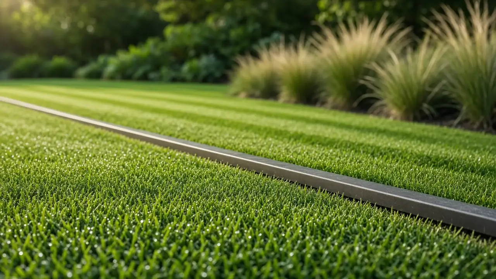
Regelmäßige Pflege
Für regelmäßige Pflege-, Schnitt- und Wartungsarbeiten erstellen wir gemeinsam mit Ihnen einen genauen Plan – und bieten ihn zu vergünstigten Pauschalen an. Eine aufwändige Einzelanfrage und Beauftragung entfällt.
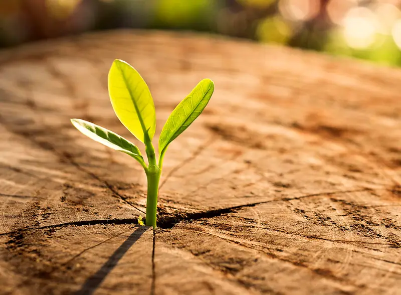
Unser Versprechen
Wir legen besonderen Wert auf heimische Pflanzen, Gehölze und Rohstoffe – sie kommen am besten mit Boden und Klima unserer Region zurecht. Darum bieten wir Ihnen Pflanzarbeiten mit Anwachs-Garantie an.
Über uns
„Für uns ist der persönliche Kontakt mit Ihnen entscheidend für einen guten Job. Wir setzen alles daran, dass Sie mit unserer Arbeit zufrieden sind und uns gerne auch langfristig vertrauen.“
Abdullah SivariInhaber · Sivari Gartenbau, Langenfeld
In Gärten und Grünflächen sind Pflanzen, Pflegen und Bauen Arbeiten, die flexibel ausgeführt und immer wieder von Neuem angepackt werden müssen. Gute und zuverlässige Arbeit gelingt nur mit geschulten, erfahrenen Mitarbeiterinnen und Mitarbeitern und geeigneten Arbeitsmitteln.
Einfach anrufen unter 0177 – 32 86 283 – wir kümmern uns um Ihre Wünsche.
Erst sehen wir uns die Gegebenheiten vor Ort an, dann machen wir ein verlässliches Angebot. Geht einmal etwas nicht, sprechen wir das offen an.
Ob pflanzen, pflegen oder bauen – wir stellen uns auf Ihre Wünsche ein. Benötigen wir besonderes Gerät oder Know-how von Dritten, organisieren wir das.
Heimische Pflanzen, Gehölze und Rohstoffe, Baumschulen bevorzugt aus der Region, kurze Transportwege – kostengünstig und umweltschonender.
Wir unterhalten nur Geräte, die wir bei fast jedem Auftrag brauchen. Besonderes leihen wir nur für die benötigte Zeit – damit Ihr Budget effizient eingesetzt wird.
Einsatzgebiet
Auf unsere Leistungen können Sie in einem Umkreis von ca. 60 Kilometern rund um unseren Standort Langenfeld zählen – in den Großräumen Düsseldorf, Leverkusen und Solingen, im gesamten Kreis Mettmann sowie in angrenzenden Randgebieten.
Kurze Wege halten An- und Abfahrtskosten gering, und in Notfällen sind wir schnell vor Ort. Von Langenfeld aus erreichen wir in wenigen Minuten vier Autobahnen:
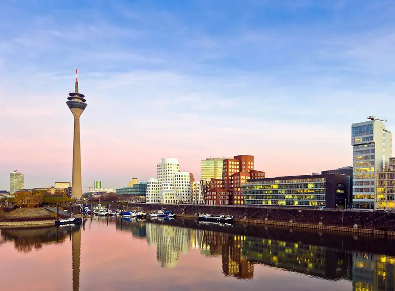
Galerie
Eindrücke aus Gartenbau, Pflege, Stein, Licht und Wasser. Tippen oder klicken Sie auf ein Bild für die Großansicht.
Kontakt
Füllen Sie die wenigen Felder aus. Ihre Nachricht entsteht live in der Vorschau und wird beim Absenden in WhatsApp geöffnet – Sie prüfen sie dort und senden selbst ab.
AdresseIndustriestraße 2, 40764 Langenfeld